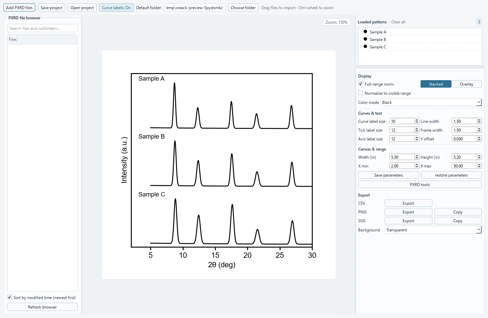

xStack PXRD Viewer
A desktop app for viewing, stacking and comparing powder X-ray diffraction patterns — from raw instrument files to publication-ready figures in a few clicks.

- Batch import by drag & drop — two-column text (.xy, .xye, .dat, .csv …), Bruker / Rigaku .raw and .xrdml.
- Stacked or overlay plots with per-curve scale, offset, colour and labels; live normalisation to the visible 2θ range.
- Processing — Savitzky–Golay, moving-average and Gaussian smoothing, arPLS background subtraction, with live preview.
- Peak analysis — positions, d-spacings, FWHM and Scherrer crystallite-size estimates.
- Export SVG / PNG / CSV or copy straight to the clipboard; save editable
.pxrdprojsessions. - Undo up to 30 steps; processing never overwrites your source files.
The installer needs no admin rights. Builds are not code-signed, so Windows SmartScreen may ask you to confirm (“More info → Run anyway”).